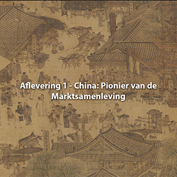
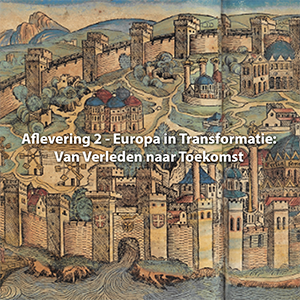
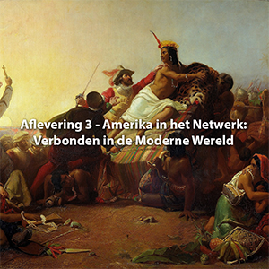
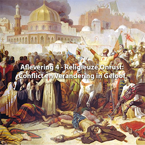
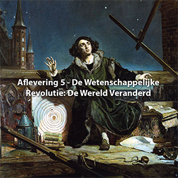
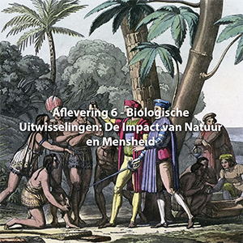

Wereld Geschiedenis 1000-1800
-

Afl-1 China: Pionier van de Marktsamenleving
De ontwikkeling van zeegaande schepen gaf China en later Europa een voorsprong op transportgebied waarmee de afstand tot gebieden die tot landvervoer waren beperkt groeide. Dit gold voor het grootste ...
-

Afl-2 Europa in Transformatie: Van Verleden naar Toekomst
Het centrum van de christelijke beschaving lag aan het begin van het tweede millennium in Constantinopel. Economisch, cultureel en militair was het Byzantijnse ...
-

Afl-3 Amerika in het Netwerk: Verbonden in de Moderne Wereld
In Amerika waren de Azteken en de Inca's de belangrijkste beschavingen. Het hart van de eerste lag in Mexico en was Tenochtitlan dat met ruim 200.000 inwoners ...
-

Afl-4 Religieuze Onrust: Conflict en Verandering in Geloof
Waar binnen de grote godsdiensten aanvankelijk levendige discussies bestonden, brachten deze het gevaar van versplintering van het geloof met zich mee. Om de eenheid van het geloof te waarborgen...
-

Afl-5 De Wetenschappelijke Revolutie: De Wereld Veranderd
Een belangrijke rol bij dit alles speelde de toegenomen communicatie en beschikbare informatie. Toegenomen handel, verstedelijking, afname van analfabetisme en missiewerk gaven hiertoe de aanzet, maar ...
-

Afl-6 Biologische Uitwisselingen: De Impact van Natuur en Mensheid
Biologische uitwisselingen vonden al millennialang plaats, vaak geleidelijk, zoals de Euraziatische uitwisseling. Na 1492 trad hierbij een versnelling op toen ook Amerika op werd genomen in het wereldwijde ...